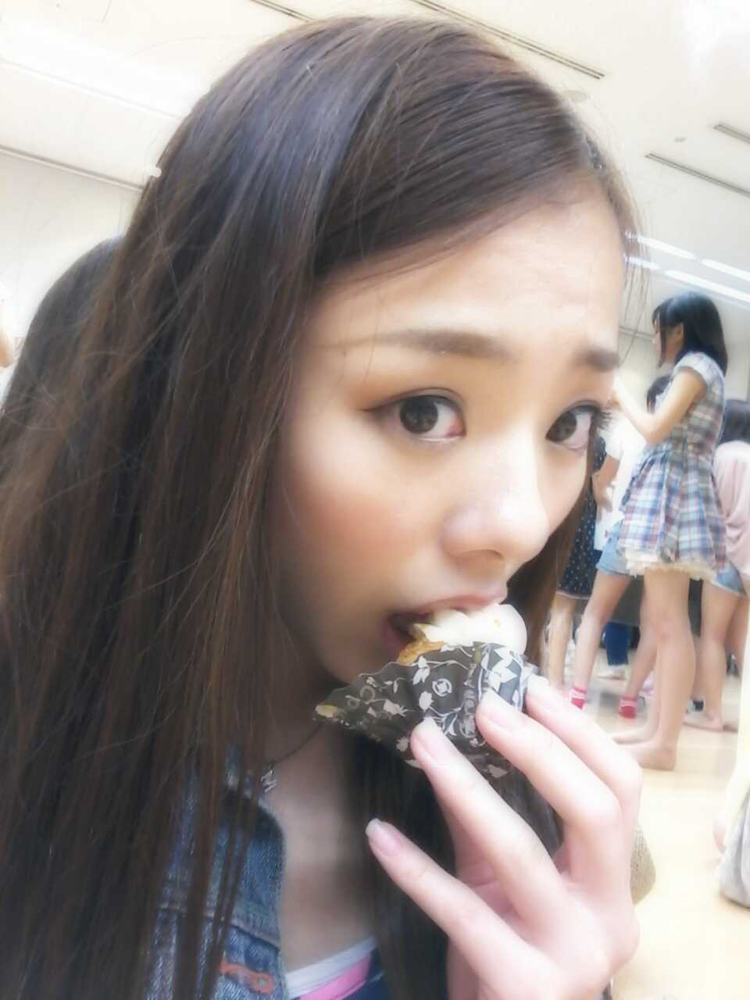
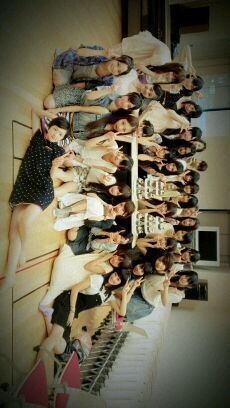

ほっほ〜い♪
ろってぃ− です *^^*

この写メは
昨日 乃木坂一周年のお祝いで
プチケーキを食べてる時の
写メです〃ω〃
今日は 8/22
乃木坂46 ニューシングル
『走れ!Bicycle』の
発売日です(^ー^)
そして 今日から三日間は
イオンツアーです♪
今日は １日目っ)))
神戸でした*^^*
電車が通ってない所だから
来るの大変だったですよね・-・`?
でも お忙しい中
来てくださって
本当に嬉しかったです(^ー^)
ありがとうございます*^^*
メンバーは
まひろ みくも あすかです。
ちなみに今
三人で ホテルのベッドで
ゆったりしてます(⌒‐⌒)
明日は 大阪のイオンモールで
明後日は 京都のイオンモールに
行きます*^^*
是非っ☆!!
買い物がてらでも
いいので来てくださいねぇ〜＼(^o^)／
待ってまあす^^
そしてそしてっ)))
8/20★☆★
ハッピーバースデー(きらきら)
まいやん`・ω・☆
キラーン
二十歳 )) 二十歳(*ω*)!?
大人だwww (^ー^)にっ
これからも
その美しい顔立ちと
誰にも負けない白い肌を
持った
優しいお姉たま担当
まいやん姉ちゃんで
いてねー♪
大好きです。
楽しい二十歳を
過ごせますように*^^*

ろってぃーは
どこにいるかな?・ω・〃
...
生駒ちゃんの後ろだよ^ω^
では ,
皆様 おやすみなさい〃・ω・〃
のし